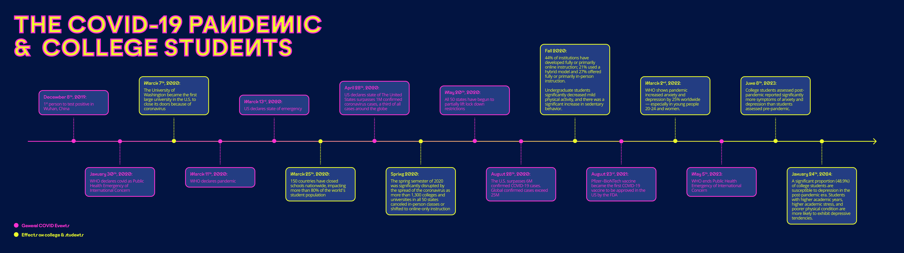

Role
UX Researcher
UI/UX Designer
Timeline
Mar - Apr 2024 (3 weeks)
Overview
Though the worst of the COVID-19 pandemic is behind us and campuses are again bustling with people and activities, many college students continue to struggle with mental health issues such as anxiety and depression. As a college student, I didn't realize just how much one's mental health is affected by social interactions and physical activities until the pandemic, when it became significantly harder for people to socialize and exercise. This realization inspired me to create walky talky, an app designed to help college students walk and talk together!
Research
With the research, I wanted to identify and qualify the target users (e.g. who are they? what are their needs?) as well as understand the contexts that gave rise to the idea of walky talky. To do so, I sought to answer these 4 research questions:
1. How impactful was the pandemic on college students?
The COVID-19 pandemic showed us just how important having social interactions and staying physically active were for maintaining good mental health. But, just how impactful was the pandemic on college students' overall health?

2. Why walking?
Yingzi Yang, a 23-year-old senior at the University of Michigan, is a regular member of the University of Michigan Math Walking Club.
The quarantine separates me from my friends and all the activities, and I was so lonely that I started to teach my dog to talk...The walking club saved both my dog and I.
Walking is a simple yet powerful way to improve physical and mental mental well-being! Multivariable models revealed that walking less or not at all was associated with negative changes in mental and physical health. Increasing walking was significantly associated with a positive change in physical health.
3. Will walky talky be relevant post-pandemic?
The role of technology as an enabler is important, but not at the expense of creating more isolation.
-Dr. Aaron Krasnow, associate VP for Health and Counseling Services at Arizona State
Walky talky is essentially an idea born from the pandemic. Will it be relevant in a post-pandemic world where people can exercise and socialization as they desire?
The COVID-19 pandemic had a profound impact on college students' physical activity and mental health. With the disruption of campus life and social isolation measures, many students experienced increased feelings of anxiety, depression, and loneliness. But studies have shown that student mental health was worsening even before the pandemic, and have continued to worsen after the pandemic, even as campuses have returned to normal. While it's challenging to attribute these mental health challenges solely to the pandemic, it's evident that students are facing unprecedented struggles.
However, what the pandemic did do was highlight how vital social interactions and physical activities are for students' well-being. In the post-pandemic era, walky talky can bridge this gap by encouraging students to connect in a healthy, active way — one step and conversation at a time.
4. Why college & universities students only?
While I considered expanding walky talky to reach populations beyond college and university students, I ultimately decided to focus solely on college and university campuses for this iteration. This decision was made to prioritize user safety as widening the user base could potentially pose risks to users (i.e. college students). Limiting the demographic and geographical area to the college and university sphere allows users to use walky talky comfortably in a familiar, safe, and controlled environment.
Process
With a clearer insight into the target users, I started working on how walky talky could effectively meet user needs and address their frustrations. I started with rough sketches of the what I wanted walky talky's interface to look like.
Working out the features
Walky talky is essentially a platform for students to find and plan walks with one another, so I focused on features that would facilitate and encourage user interactions and walking. These features included maps where users could find others and invite one another to go on walks, and chats for users to plan out walk logistics. I then elaborated upon these features and added others before connecting them all to create a seamless, user-friendly experience.
This was my first UI/UX passion project! So it was both fun and fulfilling going back to an idea I had back during the pandemic and transforming it into a present-day app.
This project gave me the opportunity to flex my research muscle 💪🏼. I employed a holistic approach towards the user research, integrating both quantitative and qualitative research methods. This involved reviewing research papers as well as gathering personal student opinions. Additionally, I compared and contrasted data from different time periods (pre-pandemic, mid-pandemic, and post-pandemic) to gain a comprehensive understanding of the circumstances that gave rise to the idea of walky talky, as well as the context within which walky talky would exist.
When I encountered difficulties with the design of the interface, I turned to existing apps like Apple's Find My, Nike Running, and Instagram for inspiration. As a result, my first pass at the wireframes resembled these apps a little too closely. Upon recognizing this, I revisited my approach and redesigned the pages. This experience taught me that while drawing from existing designs can be helpful, it’s equally crucial to strive for originality. As long as your designs remain intuitive, intentional, and user-centric, it’s perfectly okay for it to diverge from the familiar!
I am ultimately proud of walky talky and feel that it is something that would truly help college students — I certainly wish I had something like this during college. Though I didn't conduct any usability tests this round, I think user testing would reveal valuable insights into usability and if users would continue to use walky talky in the long run (no pun intended). In the future, I’d also love to expand walky talky to other demographics such as older adults and/or young working adults as I have found these two groups also actively seek ways to stay active and socially connected :).